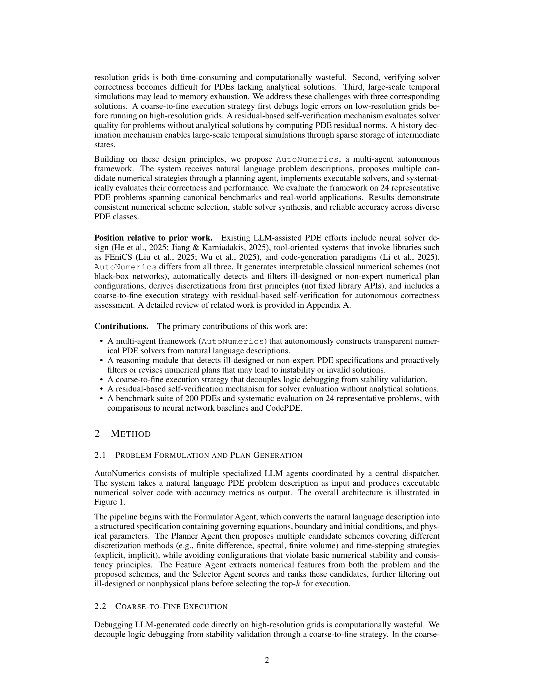

저자: Jianda Du, Youran Sun, Haizhao Yang | 날짜: 2026-02-19 | Repository: arXiv | arXiv ID: 2602.17607

Figure 1
자연어로 기술된 편미분방정식(PDE) 문제를 입력받아, LLM 기반 멀티 에이전트 시스템이 자율적으로 수치 솔버를 설계-구현-디버깅-검증하는 프레임워크 AutoNumerics를 제안한다. 블랙박스 뉴럴 솔버와 달리 고전 수치해석에 기반한 해석 가능한(transparent) 솔버를 생성하며, coarse-to-fine 실행 전략과 잔차(residual) 기반 자기 검증 메커니즘을 도입하였다. 24개 대표 PDE 문제에서 CodePDE 대비 약 6자릿수 이상 낮은 오차를 달성하였다.
LLM 멀티 에이전트가 자연어 PDE 기술로부터 고전 수치해석 기반의 해석 가능한 솔버를 자율적으로 생성하는 최초의 end-to-end 프레임워크이다. 핵심 기여는 (1) 잘못 설계된(ill-designed) PDE 명세를 탐지하고 필터링하는 추론 모듈, (2) 논리 오류와 수치 안정성 문제를 분리하는 coarse-to-fine 전략, (3) 해석해 없이도 솔버 품질을 평가하는 잔차 기반 검증이며, 이들의 조합이 기존 뉴럴/LLM 기반 솔버 대비 극적인 정확도 향상을 이끌어냈다.
총평: LLM 멀티 에이전트로 해석 가능한 고전 수치 솔버를 자율 생성하는 명확한 기여를 가진 논문으로, coarse-to-fine 전략과 잔차 기반 검증의 조합이 CodePDE 대비 6자릿수 이상의 정확도 향상을 이끌어낸 점이 인상적이다. 다만 정규 도메인과 저차원 문제에 국한된 평가, 단일 LLM 종속성, 그리고 실제 과학 컴퓨팅 워크플로우와의 괴리가 현재의 주요 한계이다.